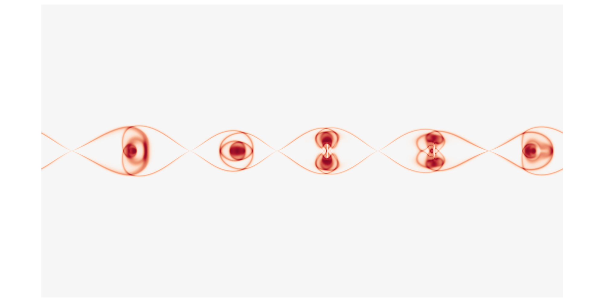

Accelerated Python for CFD
Jamie Quinn
University College London / University of Glasgow
Melvin.py
A pseudo-spectral, GPU-accelerated framework for numerically solving 2D problems in fluids.
MHD tearing instability

Why Python?
- Easy prototyping
- Fast iteration cycle
- Collective good practice
- Access to accelerated libraries
- Students want to learn & use Python
It’s a great language for prototyping research codes & teaching
Easy prototyping
- spectral/FDM spatial discretisation
- periodic/Dirichlet boundary conditions
- 2nd/4th order spatial derivatives for nonlinear advection operator
- 2nd/4th order Adams-Bashforth time integration
- Implicit handling of diffusion operator
Designed to be extensible
Fast iteration cycle
- Jupyter notebook
- Collection of scripts
- Fully-fledged Python package
Permits refinement of methods and interfaces
Collective good practices
- Version control with git & github
- Parameterisation with JSON
- Community contributions through github
- Automated unit testing & static analysis with pytest and Github Actions
Acceleration: CuPy
#import numpy as np
import cupy as np
spectral_arr = np.fft(physical_arr)
- GPU-accelerated Numpy
- Access to multi-GPU
- Easy integration with other libraries
- Drop-in alternatives like Jax offer machine learning
- Can profile using NVIDIA’s Nsight
Lessons learned
- Non-compiled = unsafe -> static analysis!!
- Non-compiled = slow -> offload as much as possible
- Speed is “good enough”
- Flexibility is worth it
- Numpy -> CuPY -> Numba -> CUDA python
Accelerated C++?
- OpenMP, OpenACC,
std::par, CUDA
- C++20 nearly as simple as Python?
- Melvin.py is 1.5x runtime of C++ CUDA version
Julia?
- Offers impressive performance with Pythonic ease
- Still young
- Few opportunities beyond HPC
Python is rarely as fast as Fortran & C++
but its flexibility makes it an ideal language for
- prototyping GPU-accelerated CFD codes
- teaching CFD